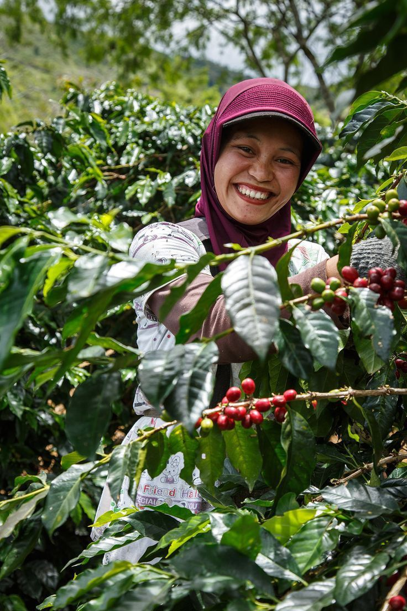
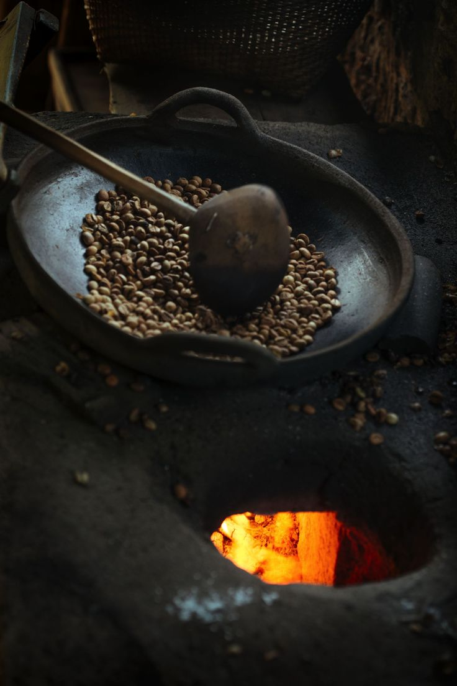
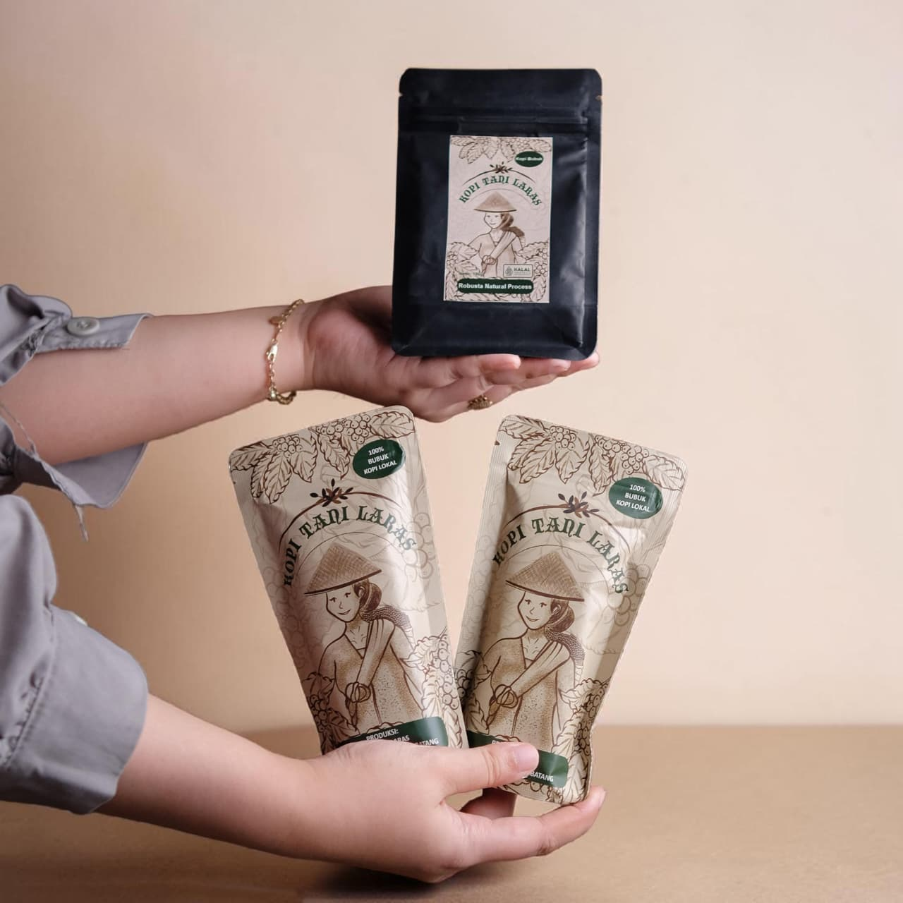
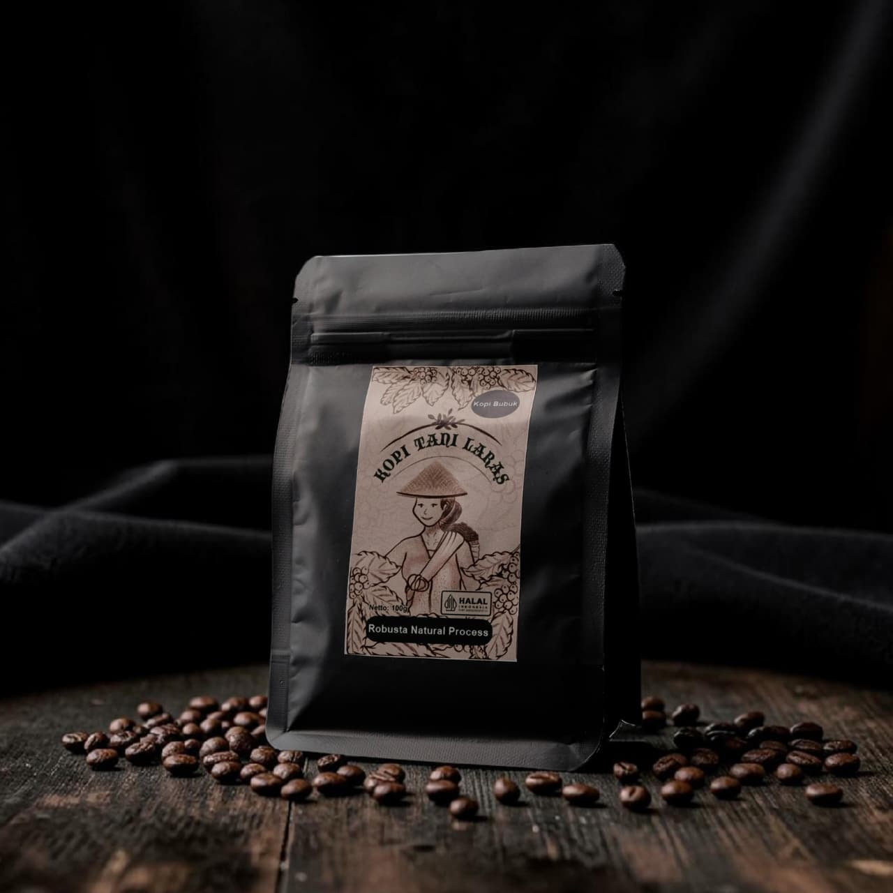
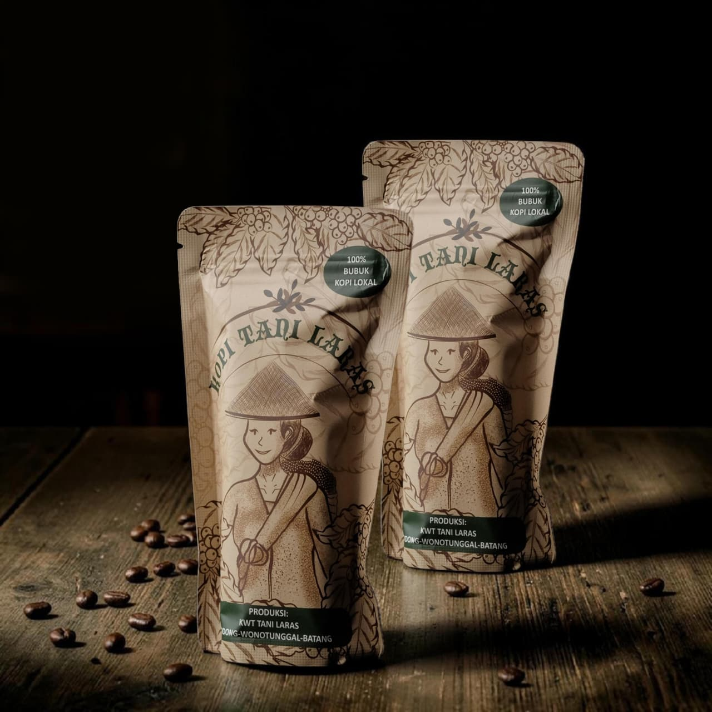
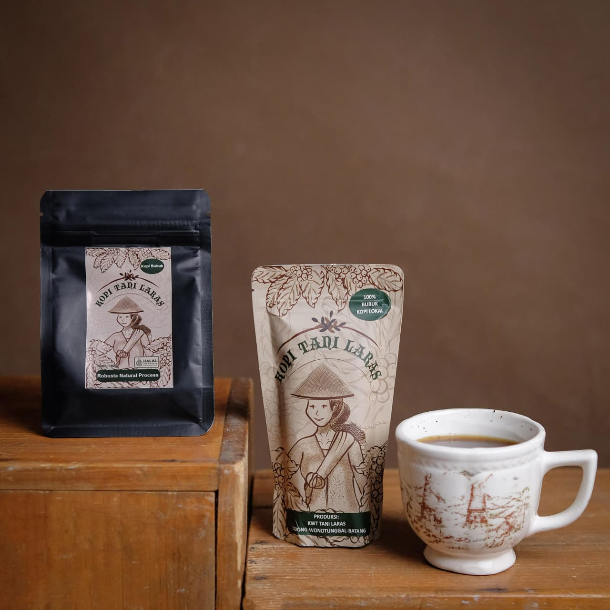

Galeri Kopi Tani Laras
Media Usaha






Cerita Singkat Kopi Tani Laras
Audio singkat sebagai pelengkap suasana pada galeri Kopi Tani Laras.






Audio singkat sebagai pelengkap suasana pada galeri Kopi Tani Laras.